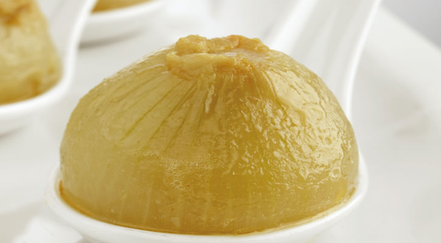

Recetas de cocina fáciles y caseras
Te ofrecemos una guía de cocina online con platos inspirados en grandes chefs, tips gastronómicos y recetas tradicionales de esas que nunca fallan.
Vas a encontrar diferentes técnicas y niveles de complejidad, pensados para que todos descubramos la receta ideal según el antojo del día.
Cebolla Rellena
Una receta tradicional asturiana, saludable y ligera

Ingredientes:
- ¼ pimiento
- 5 dl de caldo
- 1 vaso de vino blanco
- 2 cucharadas de harina
- ½ cucharada de pimentón dulce
- 1 cucharada de aceite de oliva
- 2 dientes de ajo picados
- 16 cebollitas peladas de 25 a 30g
Paso a paso:
- Pelar las cebollas, retirar la parte del centro para poder rellenarlas.
- Utilizar en interior para preparar el pisto. Picar el interior y sofreírlo con el pimiento, picado en dados.
Cuando las verduras estén tiernas, agregar el bonito en aceite. - Rellenar las cebollitas con el pisto. Cubrirlas con el caldo y poner al fuego.
- Preparar un sofrito con el ajo, la harina, el pimentón y, por último, el vino blanco (poniendo atención en que no se queme el pimentón).
- Añadírselo a las cebollitas en cuanto rompan a hervir y dejar a fuego medio 45 minutos.
- Poner cuatro cebollas rellenas en cada plato y salsear.
Coliflor con Bechamel Gratinada
Un plato es un clásico de la cocina europea. Su popularidad radica en la combinación de ingredientes sencillos y económicos que, juntos, crean una experiencia culinaria deliciosa.
Ingredientes:
- 1 coliflor grande
- 50g de manteca
- 50g de harina de trigo
- 750ml de leche
- 100g de queso rallado para gratinar (tipo Emmental o Gruyère)
- Nuez moscada al gusto
- Sal
- Pimienta negra
Paso a paso:
- Limpiar la coliflor, quitarle las hojas verdes y el tronco duro.
Separar los ramilletes y lavarlos bien. - Poner a hervir abundante agua con sal en una olla grande. Cuando hierva, añadir los ramilletes de coliflor y cocer
durante unos 10 minutos, o hasta que estén tiernos pero sin deshacerse. Escurrir y reservar. - En una olla o sartén a fuego medio, derretir la manteca. Añadir la harina y cocinar durante un par de minutos sin dejar de remover para formar el “roux”.
Esto es clave para que la salsa no tenga sabor a harina cruda. - Retirar la olla del fuego y empezar a verter la leche poco a poco, removiendo constantemente con una varilla para que no se formen grumos.
Se puede usar leche fría o tibia. - Volver a poner la olla a fuego medio-bajo y seguir cocinando la salsa sin dejar de remover hasta que espese. Tardará unos 8-10 minutos.
- Una vez que la bechamel tenga la consistencia deseada, sazonar con sal, pimienta negra y una pizca de nuez moscada.
- Precalentar el horno en modo grill a 200°C. Colocar los ramilletes de coliflor en una fuente apta para horno y cubrir uniformemente con la salsa bechamel.
- Espolvorear el queso rallado por encima y llevar al horno. Gratinar durante unos 10-15 minutos o hasta que la superficie esté dorada y burbujeante.
- Retirar del horno, dejar reposar un par de minutos y servir caliente.
Tarta de calabaza
Con la llegada del otoño, la calabaza se convierte en una de las grandes protagonistas de la cocina, su dulzor y su textura cremosa la hacen perfecta
Ingredientes:
- 1 calabaza naranja de 500 g
- 150 g de azúcar glace
- 2 huevos
- 1 cucharada de Maizena
- 1 cucharada de pan rallado
- 1 cucharada de almendras laminadas
- 1 cucharada de miel
- Mantequilla
- una pizca de sal
Paso a paso:
- Pelar la calabaza, retirar las pipas y trocearla en dados reservando unos cuantos.
Cocer el resto a fuego vivo en una cacerola con tres cucharadas de agua hasta que se convierta en un puré.
Añadir azúcar y una pizca de sal. - Disolver la Maizena en dos cucharadas de agua e incorporarla al puré de calabaza.
Hervir un par de minutos. Retirar del fuego y agregar los huevos batidos. Dejar que se enfríe. - Engrasar un molde de tarta y forrarlo con la masa quebrada. Pinchar el fondo varias veces con un tenedor.
Espolvorear con pan rallado y verter el puré tibio. Decorar con las almendras laminadas y los dados de calabaza que se habían reservado, impregnados con miel.
Cocer en el horno precalentado a 210º durante 30 minutos.
Recomendaciones:
- Temperatura ambiente: Saca la carne de la nevera 20 minutos antes de cocinarla para lograr una cocción uniforme.
- Precalentamiento: Calienta siempre las sartenes y el horno antes de colocar los alimentos.
- Menos humedad: Seca muy bien las carnes y los vegetales con papel absorbente antes de asar o freír para obtener un mejor dorado.
- No sobrecargues: Cocina en tandas si tienes mucha comida; abarrotar la sartén baja la temperatura y genera humedad en lugar de dorar.
- Arroz suelto: Lava el arroz con agua fría varias veces hasta que el agua salga completamente clara para eliminar el almidón.
- Cebolla suave: Si usas cebolla cruda en ensaladas, déjala en agua con sal y unas gotas de limón durante 10 minutos para quitarle el sabor fuerte.